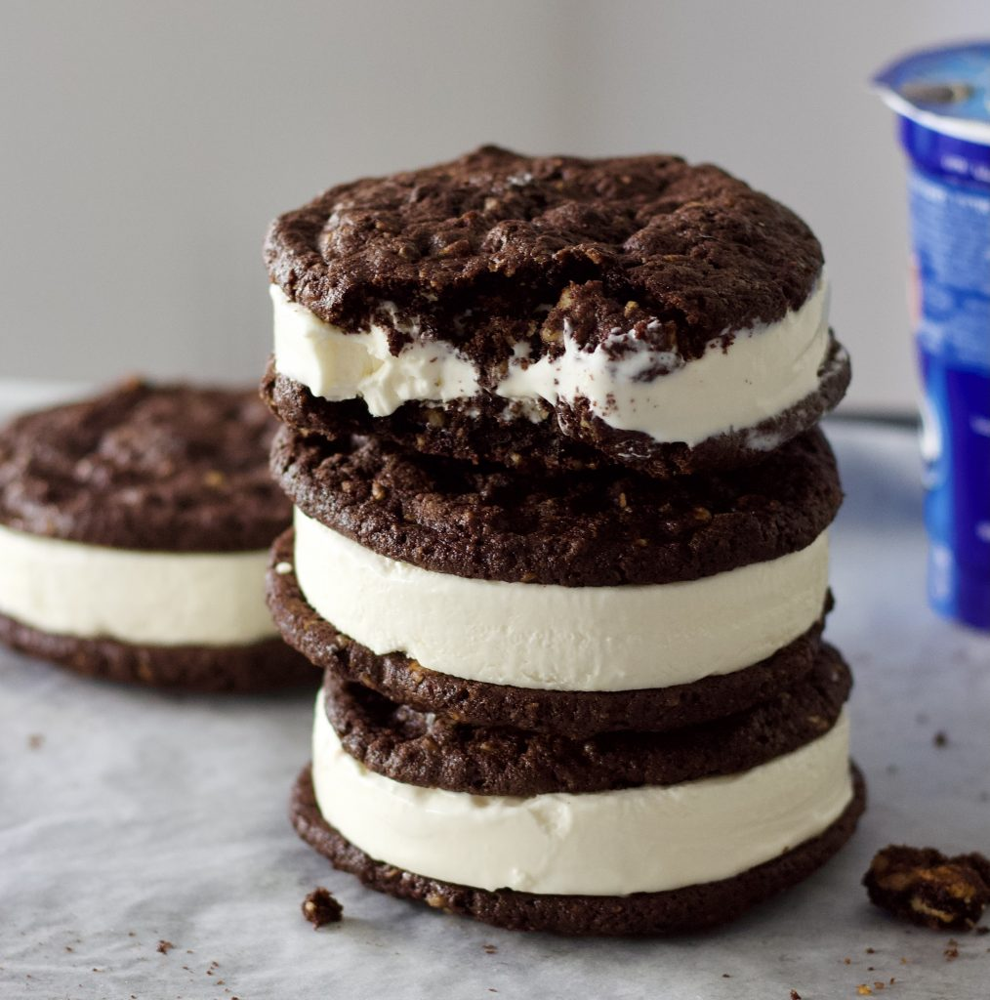

עוגיות קוקולידה
עוגיות טעימות ומרשימות, שמתאימות לאירוח וגם לפינוק מתוק.
קל להכין אותן בבית וליהנות מהן עם המשפחה.
בהצלחה!!


עוגיות טעימות ומרשימות, שמתאימות לאירוח וגם לפינוק מתוק.
קל להכין אותן בבית וליהנות מהן עם המשפחה.
בהצלחה!!

המתכון הגיע ממקור המתכון שבחרתי, והוא מתאים להכנה ביתית.
אוהבים להכין את העוגיות כשמתחשק משהו מתוק וטעים.
אפשר להכין את העוגיות מראש ולשמור אותן במקפיא.
| שלב | זמן | הערות |
|---|---|---|
| הכנת הבצק | 40 דקות | מערבבים את המצרכים |
| אפייה | 8–9 דקות | 175 מעלות |
| בדיקת העוגיות | מוציאים בזמן | |
| זמן הכנה ואפייה משוער | 49 דקות | |
| סיכום | 49 דקות | זמן משוער |